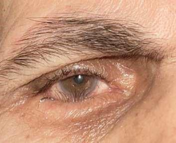

Part I · Entropion
4) Senile (involutional) entropion
Pathogenesis
- More common in the lower eyelid of old individuals, due to age-related degeneration of elastic tissue within the eyelid, leading to horizontal laxity with lack of back support.
- Overriding of pre-tarsal by pre-septal orbicularis oculi, and vertical eyelid instability due to weak or dis-inserted lower eyelid retractors, are contributing factors.
Treatment
Mainly surgical.
Compared with Senile ectropion shares the same degeneration, but here the well-supported globe keeps the lid from rolling outwards, so it turns inwards instead.
